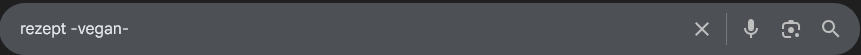
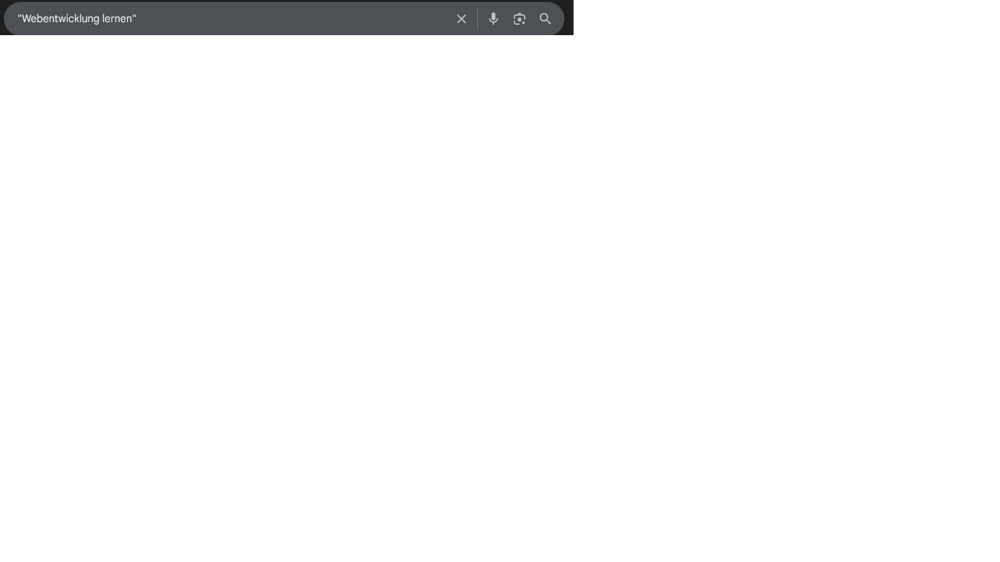
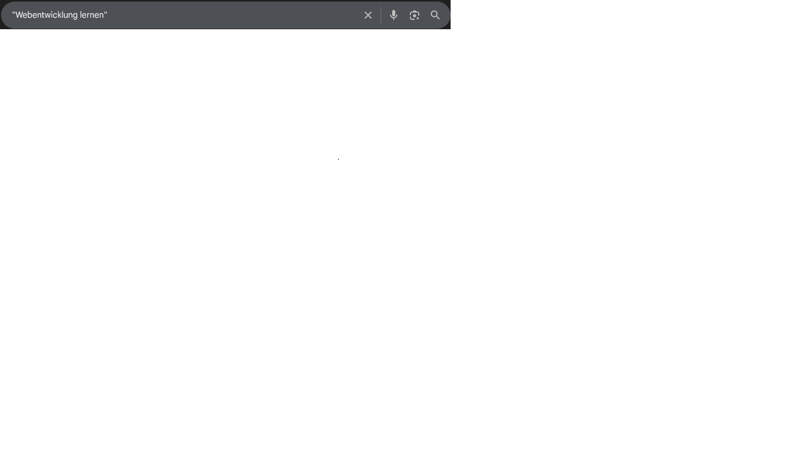

Wie man richtig mit der Suchmaschine Google.de umgeht
Hier zeigen wir dir, wie du Google effizient nutzen kannst, um die besten Suchergebnisse zu erzielen
1. Stichwörter ausschließen
Manchmal möchtest du bestimmte Begriffe aus deiner Suche ausschließen. Dafür kannst du das Minuszeichen (-) vor dem Wort verwenden. Beispiel:
Beispiel: Rezept -vegan – Diese Suche zeigt dir Rezepte, aber ohne vegane Optionen.

2. Nach PDF-Dateien suchen
Um nur nach PDF-Dateien zu suchen, kannst du den filetype:-Operator verwenden. Beispiel:
Beispiel: filetype:pdf Bauanleitung – Diese Suche zeigt nur PDF-Dokumente zum Thema Bauanleitung.
3. Bestimmte Webseiten durchsuchen
Wenn du nur eine bestimmte Webseite durchsuchen möchtest, kannst du den site:-Operator verwenden. Beispiel:
Beispiel: site:example.com Programmiertipps – Diese Suche zeigt nur Ergebnisse von der Webseite example.com zu Programmiertipps.

4. Weitere nützliche Suchoperatoren
Verwendung von Anführungszeichen (""): Um nach einer exakten Wortgruppe zu suchen,setze die Wörter in Anführungszeichen.
Beispiel: "Webentwicklung lernen"

OR:Um nach mehreren Begriffen zu suchen, die entweder auftreten können, verwende
OR. Beispiel: Hund OR Katze

Verwende immer präzise Suchbegriffe, um schneller relevante Ergebnisse zu erhalten. Je spezifischer deine Suche, desto besser ist das Ergebnis!
Weitere Quellen
Für eine detailliertere Anleitung über die Google-Suche, besuche die offizielle Google-Hilfe.
Unterschiede zwischen Suchmaschine, Meta-Suchmaschine und Webkatalog
1. Suchmaschine
Eine Suchmaschine ist eine Software, die Webseiten im Internet durchsucht und indexiert. Sie zeigt die relevantesten Ergebnisse basierend auf den Suchbegriffen der Nutzer an.
2. Meta-Suchmaschine
Eine Meta-Suchmaschine durchsucht mehrere Suchmaschinen gleichzeitig und fasst die Ergebnisse zusammen. Sie zeigt dir also die besten Ergebnisse aus verschiedenen Quellen.
Beispiel: MetaGer, DuckDuckGo, Startpage
3. Webkatalog
Ein Webkatalog ist eine manuell erstellte Sammlung von Webseiten, die in Kategorien eingeteilt sind. Es handelt sich also eher um ein Verzeichnis von Webseiten als um eine Suche in Echtzeit.
Beispiel: Yelp
Weitere Quellen
Für eine detailliertere Anleitung über die Google-Suche, besuche die offizielle Google-Hilfe.